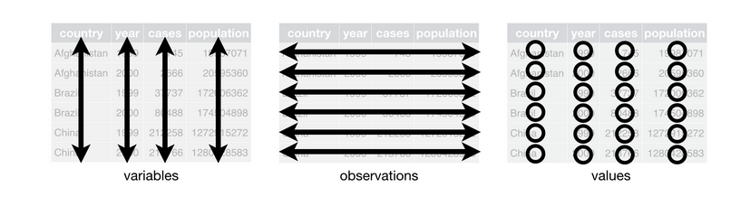

iris # ya activo desde inicio de sesión por default
?iris # F1
View(iris) # F2
str(iris)4 Estructura de datos
Asi como lo vimos para la naturaleza de los datos, comprender la estructura de los datos en R es de vital importancia.
Un vector es la estructura de datos más básica en R.
Vimos los vectores atómicos (un mismo tipo de datos: numericos, caracter…). Las listas son formas especiales de vectores (admiten todo tipo y estructra de datos).

Data frames
Un dataframe es completo con 2 dimensiones: n_fila x n_columna, donde:
1- Cada columna representa una variable y estas pueden variar en el tipo de dato que contienen.
2- Cada fila debe contener toda la info de la unidad experimental que se está evaluando
3- Cada celda debe tener su observación (en caso de faltar el dato será un NA)

Como hemos visto, hay dataframes contenidos en paquetes de inico automático. Un ejemplo muy usado, que está en el paquete base es el dataset “iris”.
 Exploración de estructura
Exploración de estructura
str(iris)Exploración numérica de las variables
summary(iris)
Challenge
- Explore el dataset iris con las siguientes funciones y hagan sus anotaciones segun lo que obtienen sus resultados:
dim(); head(); tail(); names() 4.1 Exportar / importar
Imaginen que necesito a iris como archivo excel o csv
{rio}
library(rio)
export(iris, file="data/iris.xlsx")
iris_from_pc <- import(file="data/iris.xlsx")4.2 Creación de dataframes a partir de vectores
Muy útil cuando quieren consultar sus dudas y necesitan un dataset de prueba para los foros
x <- c("A", "B", "C")
y <- c(1, 3, NA)
dat <- data.frame(x = factor(x), y = y)
dat
str(dat)# tibble::
dat1 <- tribble(
~X, ~Y,
"A", 1,
"B", 3,
"C", NA
)
dat1Comparemos dat vs dat1 con
pacman::p_load(janitor)
compare_df_cols(dat, dat1)Oops.. no se llamaban iguales??? R es case sensitive!
dat2 <- clean_names(dat1)
compare_df_cols(dat, dat2)4.2.1 Importación desde paquetes específicos de datos
{agridat}
pacman::p_load(agridat)
# ?agridat
oats <- agridat::yates.oats
# ?yates.oats4.3 Exploración de datasets
4.3.1 Estructura
Es una de las primeras cosas que hacemos post-importación. Esto nos amplia el panorama de los datos.
str(oats)Cuantas celdas hay en cada combinación “nitro + gen”
oats %>%
xtabs(~ nitro + gen, data=.)Cuantas celdas hay en cada combinación “nitro + gen + block”
oats %>%
xtabs(~ nitro + gen + block, data=.)Mas amigable a la vista:
oats %>%
xtabs(~ nitro + gen + block, data=.) %>%
ftable()4.3.2 Exploración numérica
Con valores absolutos de una variable respuesta yield
summary(oats$yield)oats %>%
xtabs(yield ~ nitro + gen + block, data=.) %>%
ftable()
Xtras
oats %>%
xtabs(yield ~ nitro + gen + block, data=.) %>%
prop.table()# sumas de valores de yield
oats %>%
xtabs(yield ~ nitro + gen, data=.) %>%
addmargins() {skimr}
library(skimr)
oats %>%
skim(yield)Un poco más en detalle:
oats %>%
group_by(nitro, gen) %>%
skim(yield)oats %>%
group_by(nitro, gen) %>%
skim(yield, grain, straw)4.4 Listas
Una lista es un tipo especial de vector en el que cada elemento puede ser de un tipo diferente
x <- list(a = 1:5, b = c("a", "b"), c = TRUE, d=dat)
x
Acceder a elementos de una lista:
x$a #
x[1] #
#sum(x[1])
x[[1]] #
sum(x[[1]])
x["c"] # Más info aquí
4.5 Matrices
Admiten un único tipo de dato y carecen de nombre de columna. Al igual que los dataframes tienen 2 dimensiones: nrow x ncol
- Construyamos
my_matrix
my_matrix <- matrix(data = c(1,2,3,4,5,6,7,8,9),
nrow=3, ncol=3,
byrow=TRUE)
my_matrix